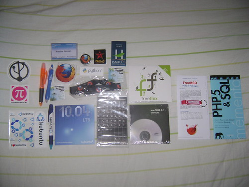

15 juillet 2010
De retour des RMLL 2010
Je suis de retour des RMLL 2010 !
Les RMLL c'est quoi ? Les Rencontres Mondiales du Logiciel Libre est un événement organisé tous les ans dans des villes de France différentes (et en 2012 à Liège !) pour promouvoir le logiciel libre au grand public autour de conférences, tables rondes, ateliers, stands et concerts.
Comme l'année dernière je participais au stand Mozilla/Songbird au village associatif pour promouvoir les logiciels de Mozilla ainsi que Songbird sur lequel je contribue depuis maintenant 3 ans. Cette année, l'événement s'est déroulé à Bordeaux. Très belle ville, des gens sympathiques, j'étais été hébergé au village universitaire 1 à Pessac avec mes collègues du stand Mozilla. Du mardi à vendredi le village associatif était à l'université Bordeaux 1 au bâtiment LaBRI. Le samedi et dimanche nous étions sur les quais Chartrons en ville.
Le repas du libre était très bon :) (foie gras de canard, magret de canard).
J'ai assisté à deux conférences :
- Outils libres pour webdesigner (pas mal d'astuces intéressantes !)
- USB3/Linux Introduction - Advanced (assez technique mais apporte beaucoup d'informations sur le fonctionnement de cette nouvelle norme)
J'ai aussi rapporté plein de goodies :

Commentaires 1